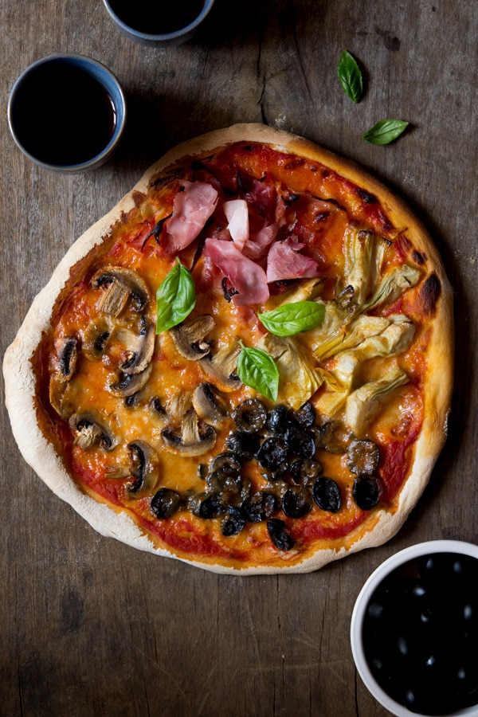

A lovely quattro staggioni

Description
Artichoke hearts, mushrooms, black olives and prosciutto cotto (ham) scattered over tomato sauce and mozzarella then baked to bubbling, crispy, pizza perfection.
If you're looking for some weekend dinner inspiration then I've got you covered.
Ingredients
For the dough
- 4 cups (1.1 lb/500g) 0' flour
- 2 tsp (7g) fast action dried yeast
- 1 ⅓ cups (320ml) lukewarm water
- 1 tbsp olive oil
- ½ tsp sugar
- 1 pinch salt
- Semolina flour for dusting
For the toppings
- 6 tablespoon passata/pureed tomatoes
- 8.8 oz (250g) mozzarella
- 5.6 oz (160g) mushrooms ,finely sliced
- 6.3 oz (180g) artichoke hearts, jarred and cut in half
- 2.4 (70g) pitted black olives, cut in half
- 4 large slices Italian ham
Instructions
- Add the yeast to the lukewarm water with ½ teaspoon sugar for 5 minutes. Combine the flour and salt in a large mixing bowl.
Make a well in the centre and add the water/yeast mixture whilst mixing the dough together with a spoon until you have obtained a dough.
If it's too sticky you can gradually add a little more flour.
- Dust a clean work surface with a little flour and knead the dough for around 5-10 minutes until it's silky smooth and soft.
If you lightly press your finger on the ball of dough it should spring back up easily.
Add 1 tablespoon of olive oil to a large clean bowl and rub all over until the bowl is coated.
Shape the dough into a ball and place in the bowl, rub the top of the dough with a tiny amount of olive oil.
Cover with cling film and leave in a warm place for at least 3 hours until doubled in size.
- When you are ready to make the pizzas place your pizza trays in the oven and preheat the oven to 220°C/425F/gas mark 7.
- Divide your dough in half roughly with your hands and place on a lightly floured work surface.
Press lightly in the dough to shape it into a rough circle or rectangle then using a rolling pin dusted with flour roll the dough out to fit your tray.
The dough should be rolled out as thin as possible without tearing.
- Remove the pizza tray from the oven and dust lightly with semolina flour.
Transfer your dough to the tray and spread with 3 tablespoon of passata, you don’t want to much or your pizza will go soggy.
Tear up half the mozzarella with your hands and dot it over the base.
- Finally, add your toppings over four sections of the pizza.
Repeat with the second pizza and bake in the oven for 10-15 minutes until the cheese has melted and the crust is crispy.